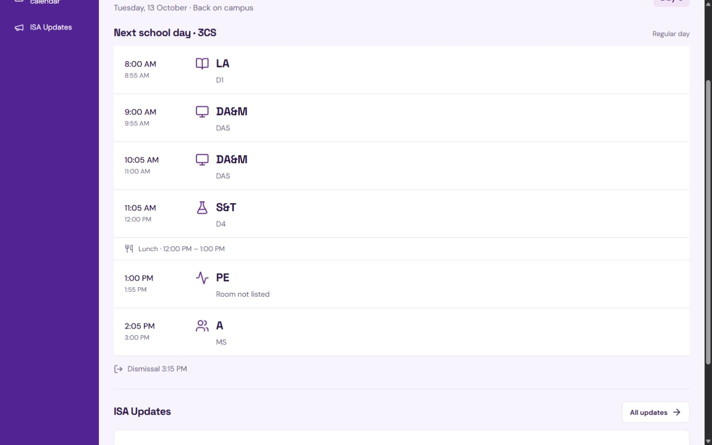

A small personal archive
sol.
Projects, loose notes,
and whatever is playing.
Pick a place to look closer.
The readable archive is ready. Preparing the world…
01 / Things made
Projects

Shifty Read the project ↗Schedule Assistant, being rebranded as Shifty.
A school schedule project for the Itz’at community.
Next frame
More projects and photographs are still being selected.
02 / Loose notes
About
I'm Sol. This is where my projects, notes, and music live.
A longer introduction is still to come.
Still making room for the next thing.
03 / Other places
Quicklinks
Say something private
This part is still being built. Nothing can be sent or saved here yet.
The plan is a private note only Sol can read. A public guestbook, if added, would be separate.